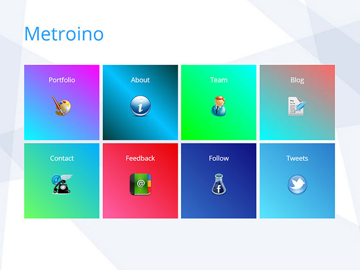
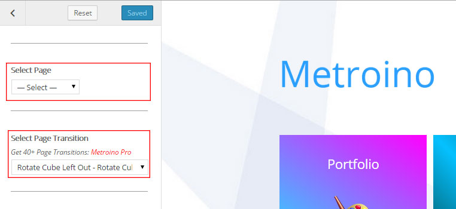

Metroino - Responsive WordPress Theme
The Documentation
Thank you for your download.
To Have All Metroino Theme Features Upgrade To Metroino Pro :
Upgrade To Metroino Pro

To see Metroino Tiled Homepage you should setup a static front page. Go to Setting -> Reading -> "Front page displays" then click "A static page" and select a page as Front page and click save changes.
To Customize Homepage
Appearance -> Customize -> Homepage Options -> Tile Options - Select Page and Select Page Transition
